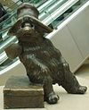

Welcome to Wikipedia,
the free encyclopedia that anyone can edit.
5,261,710 articles in English
- Arts
- Biography
- Geography
- History
- Mathematics
- Science
- Society
- Technology
- All portals
From today's featured article

The Earth-grazing meteoroid of 13 October 1990 entered the atmosphere above Czechoslovakia and Poland and, after 9.8 seconds, returned to space. Named EN131090, the 44-kilogram (97 lb) meteoroid was observed travelling 409 kilometres (254 mi) at a speed of 42 km/s (26 mi/s) by cameras of the European Fireball Network. Its apparent magnitude peaked at −6.3, several times brighter than Venus's peak magnitude. Observations of such events are quite rare; this was the second recorded by scientific astronomical instruments (after the 1972 Great Daylight Fireball) and the first recorded from two distant positions, which enabled the calculation of several of its orbital characteristics. The encounter with Earth significantly changed its orbit and, to a smaller extent, some of its physical properties, including its mass and the structure of its upper layer. If the meteoroid had reached the lower atmosphere, it would have overheated and exploded high above the ground, leaving at most a few small meteorites that posed no danger to the Earth's surface. (Full article...)
Did you know...

- ... that after Edmund Kalau (pictured) spent his childhood in the Hitler Youth, he converted to Christianity and served in Palau and Yap in the Liebenzell Mission?
- ... that after Edmund Kalau (pictured) spent his childhood in the Hitler Youth, he converted to Christianity and served in Palau and Yap in the Liebenzell Mission?
- ... that after Edmund Kalau (pictured) spent his childhood in the Hitler Youth, he converted to Christianity and served in Palau and Yap in the Liebenzell Mission?
- ... that after Edmund Kalau (pictured) spent his childhood in the Hitler Youth, he converted to Christianity and served in Palau and Yap in the Liebenzell Mission?
From today's featured article

The Earth-grazing meteoroid of 13 October 1990 entered the atmosphere above Czechoslovakia and Poland and, after 9.8 seconds, returned to space. Named EN131090, the 44-kilogram (97 lb) meteoroid was observed travelling 409 kilometres (254 mi) at a speed of 42 km/s (26 mi/s) by cameras of the European Fireball Network. Its apparent magnitude peaked at −6.3, several times brighter than Venus's peak magnitude. Observations of such events are quite rare; this was the second recorded by scientific astronomical instruments (after the 1972 Great Daylight Fireball) and the first recorded from two distant positions, which enabled the calculation of several of its orbital characteristics. The encounter with Earth significantly changed its orbit and, to a smaller extent, some of its physical properties, including its mass and the structure of its upper layer. If the meteoroid had reached the lower atmosphere, it would have overheated and exploded high above the ground, leaving at most a few small meteorites that posed no danger to the Earth's surface. (Full article...)
Did you know...
- ... that after Edmund Kalau (pictured) spent his childhood in the Hitler Youth, he converted to Christianity and served in Palau and Yap in the Liebenzell Mission?
- ... that after Edmund Kalau (pictured) spent his childhood in the Hitler Youth, he converted to Christianity and served in Palau and Yap in the Liebenzell Mission?
- ... that after Edmund Kalau (pictured) spent his childhood in the Hitler Youth, he converted to Christianity and served in Palau and Yap in the Liebenzell Mission?
- ... that after Edmund Kalau (pictured) spent his childhood in the Hitler Youth, he converted to Christianity and served in Palau and Yap in the Liebenzell Mission?
Today's Featured Picture

The Peasant Wedding is a 1567 genre painting by the Flemish Renaissance painter and printmaker Pieter Bruegel the Elder, one of many depicting peasant life. It is housed in the Kunsthistorisches Museum, Vienna.
Painting: Pieter Bruegel the Elder
Other areas of Wikipedia
- Community portal – Bulletin board, projects, resources and activities covering a wide range of Wikipedia areas.
- Help desk – Ask questions about using Wikipedia.
- Local embassy – For Wikipedia-related communication in languages other than English.
- Reference desk – Serving as virtual librarians, Wikipedia volunteers tackle your questions on a wide range of subjects.
- Site news – Announcements, updates, articles and press releases on Wikipedia and the Wikimedia Foundation.
- Village pump – For discussions about Wikipedia itself, including areas for technical issues and policies.